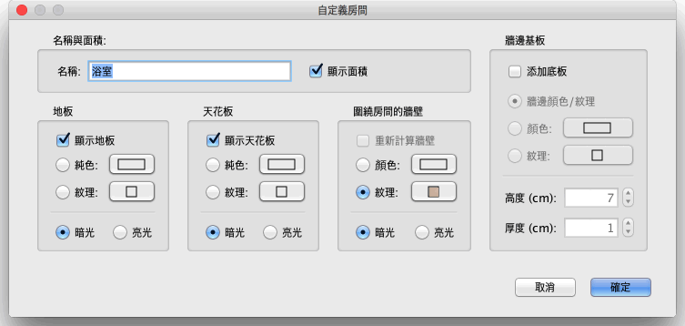

| 自訂房間 | |||
如果要自訂家居模型中房間的位置，您可以在平面圖中將其選中後用滑鼠進行操作。 如果平面圖中只有一個房間被選中的話，您可以用滑鼠單獨拖曳房間的每一個角點。如果房間的名稱、面積被設置為可見的話，您也可以分別移動它們的位置。
|

|
當滑鼠指標位於這些標示符上時，其形狀會發生變化，指示您可以拖曳滑鼠更改相應的點或文字的位置。如果您將角標示符拖到牆體附近，當滑鼠處於按下狀態且“自動吸附”啟用時，您可以使用顯示出的校準線進行對準。 您還可以使用“自訂房間”對話方塊更改房間的名稱和 3D 屬性，方法是在平面圖中按兩下您想要更改的房間，或者在選中要更改的房間後使用平面圖→自訂房間... 功能表項目。  在該對話方塊中，您可以更改選定房間的名稱，以及其在 3D 視圖中的可見性。 在房間四周的牆壁，您將可以改變它 選擇房間的名稱，然後是面積要計算及顯示它。
|


|